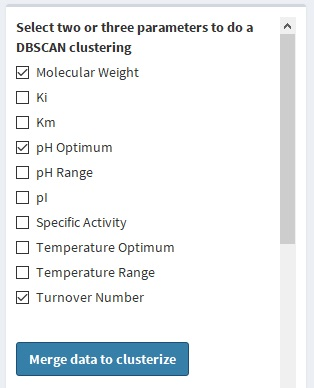

K-means
K-means
is a clustering algorithm consisting of generating
random points and calculate a distance among the nearest point, discarding the most distant one and repeating until the k (number of clusters) are
generated. To do the k-means clustering click the "K-means clustering" green button on the Cluster section or change the tab to the K-means clustering.
.jpg)
On the sidebar select 2 (for a 2-dimensional clustering) or 3 (for a 3-dimensional one) and click the "Clusterize" blue button below the parameters
list.
The k (the number of clusters) is determined by calculating the within-cluster sum of square (WSS), which a measure of the distance of the point within
each cluster. Then, the biggest decrease is chosen, this is called the "Elbow" method.
.jpg) Note: This graph is done with the
Plotly library.
Hence, you can hide/show the different parameters by clicking the legend on the right, save as .png, and make a
different type of zooms.
Note: This graph is done with the
Plotly library.
Hence, you can hide/show the different parameters by clicking the legend on the right, save as .png, and make a
different type of zooms.
You also can download the clustering as a .txt file, the format has described
before,
containing the cluster as a column with the number of the cluster. This is more useful in case the data was reduced in order to
allow the visualization.
DBSCAN
Another clustering algorithm is
DBSCAN,
this algorithm
is based on the density of the clusters. Taking an initial epsilon, as the distance between two points, and a minimum of points value, a cluster is defined when a region of points is
enough dense. To do a DBSCAN clustering, click the second green button on the sidepanel of the Clustering section or just select the tab "DBSCAN Clustering".
.jpg)
Once in the "DBSCAN Clustering" section, select the two o three parameters you want to cluster and merge this data by clicking the "Merge data" blue button.

This going to generate a histogram showing the twenty intervals of the (Euclidean) distance between each parameter and the frequency of it. There are no rules of how to select
the two parameters needed, epsilon and minimum points, but the shown plot could help. Choose an adequate distance, generally the maximum value of the modal range. A too long epsilon
won't generate too many cluster and too small one clustering the whole data. Min Points too small or too long has the same effect. Min Points should be at least greater than the number
of dimension (two or three parameters) plus one. Use the sliders to select these parameters and click the "Cluster" button.
Note: it is possible that the amount of data are too much to calculate distance. In this case, data is going to be reduced and the eliminated data are not going to be used for
clustering.
Clusters are defined as numbers from 1, while 0 means unclustered points, due to low-density regions is generated, also called as outliers.
.jpg) Note: This graph is done with the
Plotly library.
Hence, you can hide/show the different parameters by clicking the legend on the right, save as .png, and make a
different type of zooms.
Note: This graph is done with the
Plotly library.
Hence, you can hide/show the different parameters by clicking the legend on the right, save as .png, and make a
different type of zooms.
Same as "
k-means
", if data is lost for visualization, this is available clustering in a downloaded table.
.jpg)